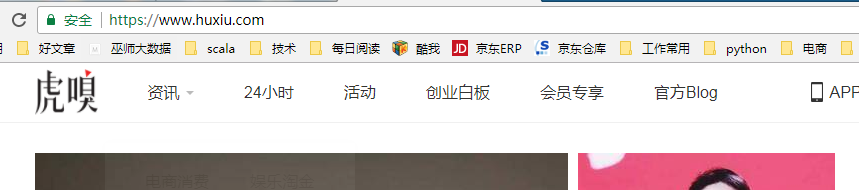
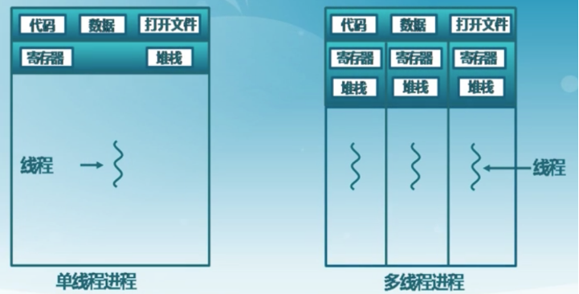
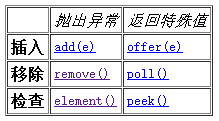

<dependency>
<groupId>org.apache.httpcomponents</groupId>
<artifactId>httpclient</artifactId>
<version>4.5.3</version>
</dependency>
<!-- jsoup HTML parser library @ https://jsoup.org/ -->
<dependency>
<groupId>org.jsoup</groupId>
<artifactId>jsoup</artifactId>
<version>1.10.3</version>
</dependency>
<!-- https://mvnrepository.com/artifact/org.springframework/spring-jdbc -->
<dependency>
<groupId>org.springframework</groupId>
<artifactId>spring-jdbc</artifactId>
<version>4.2.6.RELEASE</version>
</dependency>
<dependency>
<groupId>mysql</groupId>
<artifactId>mysql-connector-java</artifactId>
<version>5.1.41</version>
</dependency>
<dependency>
<groupId>c3p0</groupId>
<artifactId>c3p0</artifactId>
<version>0.9.1.2</version>
</dependency>
<dependency>
<groupId>com.alibaba</groupId>
<artifactId>fastjson</artifactId>
<version>1.2.31</version>
</dependency>
<dependency>
<groupId>com.google.code.gson</groupId>
<artifactId>gson</artifactId>
<version>2.8.1</version>
</dependency>
package huxiuSpider;
import java.io.IOException;
import java.io.UnsupportedEncodingException;
import java.util.ArrayList;
import java.util.Date;
import java.util.HashMap;
import java.util.Map;
import java.util.concurrent.ArrayBlockingQueue;
import java.util.concurrent.ExecutorService;
import java.util.concurrent.Executors;
import org.apache.http.client.ClientProtocolException;
import org.apache.http.client.entity.UrlEncodedFormEntity;
import org.apache.http.client.methods.CloseableHttpResponse;
import org.apache.http.client.methods.HttpGet;
import org.apache.http.client.methods.HttpPost;
import org.apache.http.impl.client.CloseableHttpClient;
import org.apache.http.impl.client.HttpClients;
import org.apache.http.message.BasicNameValuePair;
import org.apache.http.util.EntityUtils;
import org.jsoup.Jsoup;
import org.jsoup.nodes.Document;
import org.jsoup.nodes.Element;
import org.jsoup.select.Elements;
import com.alibaba.fastjson.JSON;
/**
* 开发虎嗅爬虫遇到的第一个问题 服务器返回500，简单的反爬虫技术。
*
* @author maoxiangyi
*
*/
public class HuxiuSpider {
private static ArticleDao articleDao = new ArticleDao();
private static ArrayBlockingQueue<String> urls = new ArrayBlockingQueue<String>(500);
private static ExecutorService pool = Executors.newFixedThreadPool(10);
public static void main(String[] args) throws Exception {
// 初始化六个线程用来解析每个新闻详情页
for (int i = 0; i < 10; i++) {
pool.submit(new Runnable() {
public void run() {
while (true) {
try {
String url = urls.take();
// 访问单个页面 得到html
String html = getHtmlByGet(url, getHeaders());
if (html != null) {
// 解析html文档，得到artice对象
Article article = parseArticle(html);
// 保存数据库
save2db(article);
}
} catch (InterruptedException e) {
// TODO Auto-generated catch block
e.printStackTrace();
}
}
}
});
}
// 1、通过httpclient发起get请求
HashMap<String, String> headers = getHeaders();
String html = getHtmlByGet("https://www.huxiu.com/", headers);
// 2、解析首页
parseIndex(headers, html);
// 3、获取分页信息 下一页
String last_dateline = getDateLineByIndexHtml(html);
paging(headers, last_dateline);
}
private static void paging(HashMap<String, String> headers, String last_dateline)
throws UnsupportedEncodingException, IOException, ClientProtocolException, Exception {
// 第二页
HttpPost httpPost = getPost(headers, last_dateline, 2);
String html = getHtmlByPost(httpPost);
// 解析json串
HuxiuResponse res = JSON.parseObject(html, HuxiuResponse.class);
Document doc = Jsoup.parse(res.getData());
// url article
Elements alist = doc.select("a[class=transition]");
for (Element element : alist) {
urls.put("http://www.huxiu.com" + element.attr("href"));
// html = getHtmlByGet("http://www.huxiu.com" +
// element.attr("href"), headers);
// Article article = parseArticle(html);
// save2db(article);
}
// 做第三页 4 5 6
// 最终可以多少页 总共分页页码，获得lastdateline
for (int page = 3; page <= res.getTotal_page(); page++) {
HttpPost hp = getPost(headers, res.getLast_dateline(), page);
html = getHtmlByPost(hp);
res = JSON.parseObject(html, HuxiuResponse.class);
doc = Jsoup.parse(res.getData());
// url article
alist = doc.select("a[class=transition]");
for (Element element : alist) {
urls.put("http://www.huxiu.com" + element.attr("href"));
// html = getHtmlByGet("http://www.huxiu.com" +
// element.attr("href"), headers);
// Article article = parseArticle(html);
// save2db(article);
}
System.out.println("-----------------------------分页完成------------------------");
}
}
private static String getHtmlByPost(HttpPost httpPost) throws IOException, ClientProtocolException {
CloseableHttpClient pagingHttpClient = HttpClients.createDefault();
// 发起请求
CloseableHttpResponse paginHtml = pagingHttpClient.execute(httpPost);
return EntityUtils.toString(paginHtml.getEntity());
}
private static HttpPost getPost(HashMap<String, String> headers, String last_dateline, int page)
throws UnsupportedEncodingException {
String api = "https://www.huxiu.com/v2_action/article_list";
HttpPost httpPost = new HttpPost(api);
// 提交一些参数
ArrayList<BasicNameValuePair> paramList = new ArrayList<BasicNameValuePair>();
paramList.add(new BasicNameValuePair("huxiu_hash_code", "a3bec0c023f9f2481ed8eeddf9c15225"));
paramList.add(new BasicNameValuePair("page", page + ""));
paramList.add(new BasicNameValuePair("last_dateline", last_dateline));
httpPost.setEntity(new UrlEncodedFormEntity(paramList));
// 提交请求头
for (Map.Entry<String, String> entry : headers.entrySet()) {
httpPost.addHeader(entry.getKey(), entry.getValue());
}
return httpPost;
}
private static void parseIndex(HashMap<String, String> headers, String html) {
if (html != null) {
getArticleListByIndex(html);
// // 2.1、获取首页中每个url对应的详情页
// for (String url : articleUrls) {
// /**
// * 思考一个性能问题：for循环是依次迭代的，假设articleUrls.size=200，
// * 抓取完所有的页面会需要很多时间，如何提高住区的速度？
// *
// * Java基础 多线程 一个进程中有个线程执行，可以提高处理速度。
// */
// new ProcessPageInfo(url, headers).start();
// }
}
}
private static String getDateLineByIndexHtml(String html) {
Document doc = Jsoup.parse(html);
Elements eles = doc.select("div[data-last_dateline]");
return eles.get(0).attr("data-last_dateline");
}
/**
* 将新闻保存到数据库中 数据库的连接(mysql) 账户密码 连接url 连接(datasource) mybatis jdbctemplate
*
* @param article
*/
public static void save2db(Article article) {
// 不能让数据库连接池 每次都创建
articleDao.save(article);
}
public static Article parseArticle(String html) {
Article article = new Article();
Document doc = Jsoup.parse(html);
// 获取标题
Elements titles = doc.select("h1.t-h1");
article.setTitle(titles.get(0).ownText());
// 获取作者信息
Elements authors = doc.select("span.author-name");
article.setAuthor(authors.get(0).text());
// 发布时间
Elements times = doc.select("span[class=article-time pull-left]");
article.setCreateTime(times.size() == 0 ? new Date().toString() : times.get(0).ownText());
// 收藏
Elements scs = doc.select("span[class=article-share pull-left]");
article.setSc(scs.size() == 0 ? "0" : scs.get(0).ownText().substring(2));
// 评论
Elements pls = doc.select("span[class=article-pl pull-left]");
article.setPl(pls.size() == 0 ? "0" : pls.get(0).ownText().substring(2));
// 获取赞
Elements zans = doc.select("span.num");
article.setZan(zans.get(0).ownText());
// 获取新闻的内容
Elements contents = doc.select("div.article-content-wrap");
article.setContent(contents.text());
System.out.println(article);
return article;
}
private static void getArticleListByIndex(String html) {
Document doc = Jsoup.parse(html);
// 第一步 获取文章列表区域
Elements articleContent = doc.select("div.mod-info-flow");
Elements aTags = articleContent.select("a[class=transition]");
for (Element element : aTags) {
String href = element.attr("href");
if (href.contains("article")) {
// 第二步 获取每个新闻详情页的url
try {
urls.put("https://www.huxiu.com" + href);
} catch (InterruptedException e) {
// TODO Auto-generated catch block
e.printStackTrace();
}
}
}
}
private static HashMap<String, String> getHeaders() {
HashMap<String, String> headers = new HashMap<String, String>();
headers.put("User-Agent",
"Mozilla/5.0 (Windows NT 6.1;Win64; x64) AppleWebKit/537.36 (KHTML, like Gecko)Chrome/59.0.3071.115 Safari/537.36");
return headers;
}
/**
* 通过httpGet的方式获取网页的内容
*
* @param url
* 网络自愿抵制
* @param headers
* 请求头
* @return 默认返回null，有也会返回null。200才返回数据。
*/
public static String getHtmlByGet(String url, Map<String, String> headers) {
String html = null;
try {
CloseableHttpClient hc = HttpClients.createDefault();
HttpGet httpGet = new HttpGet(url);
for (Map.Entry<String, String> entry : headers.entrySet()) {
httpGet.addHeader(entry.getKey(), entry.getValue());
}
CloseableHttpResponse response = hc.execute(httpGet);
int code = response.getStatusLine().getStatusCode();
if (200 == code) {
html = EntityUtils.toString(response.getEntity());
} else {
System.out.println(code);
System.out.println("请求url失败……" + url);
}
} catch (Exception e) {
System.out.println(url);
System.out.println("访问网络资源失败！" + e);
}
return html;
}
}

通过多个线程并发执行，从而提高任务处理的速度。
继承Thread类，并复写run方法，创建该类对象，调用start方法开启线程。
实现Runnable接口，复写run方法，创建Thread类对象，将Runnable子类对象传递给Thread类对象。调用start方法开启线程。
public static void main(String[] args) throws ExecutionException {
//Callable的返回值就要使用Future对象，Callable负责计算结果，Future负责拿到结果
//1、实现Callable接口
Callable<Integer> callable = new Callable<Integer>() {
public Integer call() throws Exception {
int i=999;
//do something
// eg request http server and process
return i;
}
};
//2、使用FutureTask启动线程
FutureTask<Integer> future = new FutureTask<Integer>(callable);
new Thread(future).start();
//3、获取线程的结果
try {
Thread.sleep(5000);// 可能做一些事情
System.out.println(future.get());
} catch (InterruptedException e) {
e.printStackTrace();
} catch (ExecutionException e) {
e.printStackTrace();
}
}
public static void testFixedThreadPool() {
//创建固定的线程池，使用3个线程来并发执行提交的任务。底层是个无界队列
ExecutorService executorService = Executors.newFixedThreadPool(6);
executorService.execute(new MyThread());
executorService.execute(new MyRunnable());
executorService.execute(new MyRunnable());
executorService.execute(new MyRunnable());
executorService.execute(new MyThread());
executorService.execute(new MyThread());
}
public static void testSingleThreadPool() {
//创建单线程,在任务执行时，会依次执行任务。底层是个无界队列。
ExecutorService executorService = Executors.newSingleThreadExecutor();
executorService.execute(new MyThread());
executorService.execute(new MyRunnable());
executorService.execute(new MyRunnable());
executorService.execute(new MyRunnable());
executorService.execute(new MyThread());
}
public static void testCacheThreadPool() {
//创建非固定数量，可缓存的线程池。当提交的任务数量起起伏伏时，会自动创建或者减少执行线程的数量。
//当然，重用线程是线程池的基本特征。
ExecutorService executorService = Executors.newCachedThreadPool();
executorService.execute(new MyThread());
executorService.execute(new MyRunnable());
executorService.execute(new MyRunnable());
executorService.execute(new MyRunnable());
executorService.execute(new MyThread());
}
public static void testScheduledThreadPool(){
//创建一个定时执行线程池
ScheduledExecutorService executorService = Executors.newScheduledThreadPool(30);
//1、配置任务的执行周期
//scheduleAtFixedRate 固定周期执行完毕
executorService.scheduleAtFixedRate(new MyRunnable(),0,1000,TimeUnit.MILLISECONDS);
//scheduleWithFixedDelay 上一次执行完毕之后下一次开始执行
executorService.scheduleWithFixedDelay(new MyRunnable(),0,1000,TimeUnit.MILLISECONDS);
}
public static void testSingleCacheThreadPool(){
//创建一个单个线程执行的定时器
ScheduledExecutorService executorService = Executors.newSingleThreadScheduledExecutor();
//scheduleAtFixedRate 固定周期执行完毕
executorService.scheduleAtFixedRate(new MyRunnable(),0,1000,TimeUnit.MILLISECONDS);
//scheduleWithFixedDelay 上一次执行完毕之后下一次开始执行
executorService.scheduleWithFixedDelay(new MyRunnable(),0,1000,TimeUnit.MILLISECONDS);
}
public static void testMyThreadPool(){
//自定义连接池稍微麻烦些，不过通过创建的ThreadPoolExecutor线程池对象，可以获取到当前线程池的尺寸、正在执行任务的线程数、工作队列等等。
ThreadPoolExecutor threadPoolExecutor = new ThreadPoolExecutor(10,100,10,TimeUnit.SECONDS,new ArrayBlockingQueue<Runnable>(100));
threadPoolExecutor.execute(new MyThread());
threadPoolExecutor.execute(new MyRunnable());
threadPoolExecutor.execute(new MyRunnable());
}
基本概念

注意一点就好，Queue通常不允许插入Null，尽管某些实现（比如LinkedList）是允许的，但是也不建议。
Queue还有一个Deque接口，Deque代表一个“双端队列”，双端队列可以同时从两端删除或添加元素，因此Deque可以当作栈来使用。java为Deque提供了ArrayDeque实现类和LinkedList实现类。
public static void main(String[] args) {
ArrayDeque queue = new ArrayDeque();
queue.offer("春");
queue.offer("夏");
queue.offer("秋");
System.out.println(queue);
System.out.println(queue.peek());
System.out.println(queue);
System.out.println(queue.poll());
System.out.println(queue);
}
最主要的问题，重复消费，造成数据混乱
BlockingQueue,如果BlockQueue是空的,从BlockingQueue取东西的操作将会被阻断进入等待状态,直到BlockingQueue进了东西才会被唤醒.同样,如果BlockingQueue是满的,任何试图往里存东西的操作也会被阻断进入等待状态,直到BlockingQueue里有空间才会被唤醒继续操作
BlockingQueue阻塞队列
常见操作
public static void main(String[] args) {
final BlockingQueue queue = new ArrayBlockingQueue(3);
//创建三个线程 生产数据 put
for (int i = 0; i < 2; i++) {
new Thread() {
public void run() {
while (true) {
try {
Thread.sleep((long) (Math.random() * 1000));
System.out.println(Thread.currentThread().getName() + "--------------准备放数据!");
queue.put(1);
System.out.println(Thread.currentThread().getName() + "--------------已经放了数据，" +
"队列目前有" + queue.size() + "个数据");
} catch (InterruptedException e) {
e.printStackTrace();
}
}
}
}.start();
}
//创建一个线程消费数据 take 数据
new Thread() {
public void run() {
while (true) {
try {
//将此处的睡眠时间分别改为100和1000，观察运行结果
Thread.sleep(1000);
System.out.println(Thread.currentThread().getName() + "准备取数据!");
queue.take();
System.out.println(Thread.currentThread().getName() + "已经取走数据，" +
"队列目前有" + queue.size() + "个数据");
} catch (InterruptedException e) {
e.printStackTrace();
}
}
}
}.start();
}